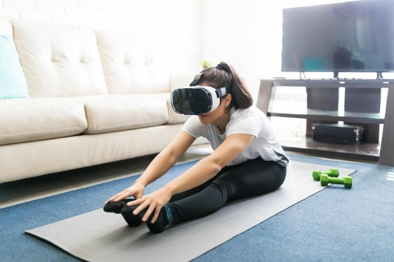

Esfuerzo físico
Nivel de esfuerzo físico requerido para interactuar con el sistema (Hart & Staveland, 1988). En un sistema de RM que implique activamente moverse, puede generar fatiga e incluso llegar a superar el umbral del compromiso físico del estudiante, es decir, que el entorno virtual demande más de lo que el estudiante está dispuesto a esforzarse.
